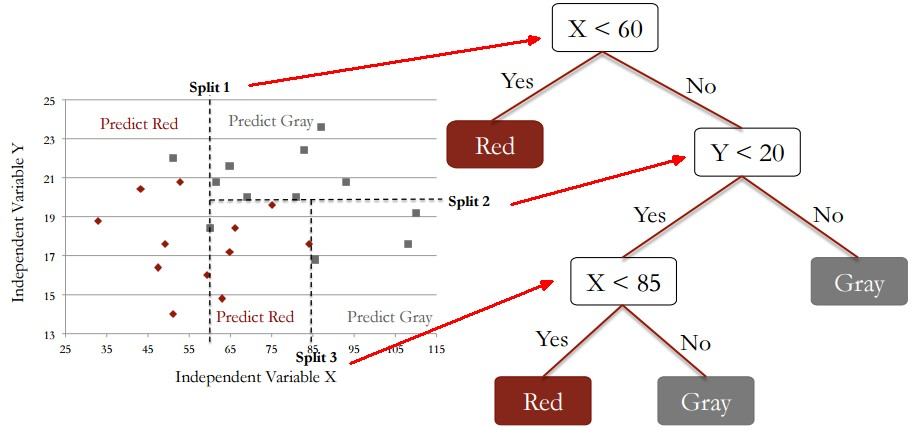

11.5 Decision Tree
11.5.1 The Concept
- A decision tree is a machine learning algorithm that partitions the data into subsets
- It is a form of tree structure, containing three types of nodes:
- Root Node: no incoming, zero or more outgoing
- Internal/Branch Nodes: one incoming and two or more outgoing
- Terminal/Leaf Nodes: at the bottom of the tree, no outgoing edge
\(\quad\)
- Root Node: no incoming, zero or more outgoing
- The tree building process starts with a split at the root, and continues splitting through branches until no further splits can be made (leaf node reached)
- N number of splits will create N+1 leafs
- It classify observations by starting at the root of the tree and moving through it until a leaf node.
11.5.1.1 The Goal
- The goal of a decision tree is to encapsulate the training data in the smallest possible tree
- The rationale for minimizing the tree size is the logical rule that the simplest possible explanation for a set of phenomena is preferred over other explanations
- Small trees produce decisions faster than large trees, and they are much easier to look at and understand
- There are various methods and techniques to control the depth, or prune, of the tree
11.5.1.2 Advantages
- Popular among non-statistician, as the model is very easy to interpret
- None-parametric, therefore does not require normality assumption
- Support many data types: continuous, categorical, ordinal and binary variable
- Transformation is not required
- Useful for detecting important variables, interactions and identifying outliers
11.5.2 Tree Building
Construcing a good decision tree involves below three processes:
- Splitting Criteria for each level of the tree:
- Selecting the variable to split
- Choosing the value to split
- Condition to stop splitting
- Selecting the variable to split
- Pruning
- Tree Selection
After a good decision tree model is built, you are ready to use it for prediction.
11.5.3 Splitting Criteria
Splitting is the process of partitioning the data set into subsets, from root to leaf nodes.
- Splits are formed on a particular variable and in a particular location
- For each split, two determinations are made:
- Splitting variable - The predictor variable used for the split
- Split point - The set of values for the predictor variable (which are split between the left child node and the right child node)
- Splitting variable - The predictor variable used for the split
- The goal of splitting each node is to select a combination of splitting variable and splitting point that minimizes the error (or maximizes the purity). Two algorithmns (with impurity measure) can be used to make this decision:
The picture below illustrates spliting of simple tree with two variables, X and Y with 3 splits

11.5.3.1 Information Gain (based on Entropy value)
\(Entropy = \sum_{i=1}^c{-p_i * log_2(p_i)}\)
\(\quad\) c = number of class (1 if only single splitting variable), p = the probability of class
\(Information Gain = Entropy(Parent Node) - Entropy (Child Node)\)
- Partition the data into subsets that contain instances with similar values (homogenous)
- Perfectly classified (completely homogeneous), the entropy is zero
- Maximum Entropy is 1 for (binary class)
- Weights probability of class by log(base=2)
- The parent node will select a variable that maximize information gain (smallest Child Entropy) as its child node
11.5.3.2 Gini (Gini Index)
\(Gini = 1 - \sum_{i=1}^c (p_i)^2\)
\(\quad\) c = number of class (1 if only single splitting variable), p = the probability of class
- Partition the data into subsets that contain instances with similar values (homogenous)
- Perfectly classified, Gini index would be zero (pure)
- Maximum Gini Index is 1
- Split that has lowest Gini index value is chosen (most pure)
- Weights probability of class by square
11.5.3.3 Gini or Information Gain ?
- Gini index calculation is faster compared to Information gain becuase it doesn’t use log computation
- This could be a reason why gini is the default method in some machine learning packages
- Studies have shown that choice of impurity measures has little effect on the performance of the decision tree. This is because they are quite consistent with each other, as shown below:
11.5.3.4 Splitting Stops When
- All samples belongs to same class (pure)
- Most samples belongs to same class. This is generalization of the above approach with some error threshold
- There are no more variabels with samples to be partitioned
- There is no more samples for the branch test attributes
- Additionally, some program will implement extra parameters to control the size of the tree, eg.
rpart::rpart.control
11.5.4 Pruning Tree
11.5.4.1 Pruning Benefits
A decision tree can expanded until the it perfectly fit the training data (error is zero). However, it will perform poorly in test data (test error will be large). Such model does not generalize well to the test data, also known as overfitting. The solution is called pruning:
- Prunning a tree has greater impact than choosing the impurity measure
- The larger the tree (more nodes), the more complex the tree is, the more risk of overfitting
The reason and benefits of smaller tree size are:
- Lower branches may be strongly affected by outliers. Pruning enables you to find the next largest tree and minimize this concern
- A simpler tree often avoids over-fitting
11.5.4.2 Pruning Process
Pruning reduces the size of the tree using bottom-up appraoch:
- Pruning removes leaf nodes under original branch
- Pruning turns some branch nodes into leaf nodes (bottom-up approach)
11.5.4.3 When To Prune
- Pre-Pruning
- Stop the algorithm before it becomes a fully grown tree
- Post-Pruning
- Grow decision tree to its entirety
- Trim the nodes from bottom-up fashion
- If generalization error improves after trimming, replace the sub-tree by a leaf noes
11.5.5 Tree Selection
- The process of finding the smallest tree that fits the data
- This is the tree that yields the lowest cross-validated error
11.5.6 Run The Code
11.5.6.1 Build The Model
rpart(formula, method=, na.action=na.rpart, model=FALSE, x=FALSE, y=FALSE, data=)
\(\quad\)formula : example y ~ x1 + x2 + x3
\(\quad\)data : training data
\(\quad\)method : splitting method - 'class' for classification
\(\quad\)control : (optional) parameter used for controlling tree growth
\(\quad\)na.action: default action delete all observations with y is missing
\(\quad\)model: keep a copy of model in the result
\(\quad\)x : keep a copy of x matrix in result
\(\quad\)y : keep a copy of dependent variable y in result
rpart.control specifies the paramters that limits the growth of tree:
rpart.control(
\(\quad\) minsplit = 20, minbucket = round(minsplit/3), cp = 0.01,$\quad$maxcompete = 4, maxsurrogate = 5, usesurrogate = 2,$\quad$xval = 10,surrogatestyle = 0, maxdepth = 30)`
The default rpart.control parameters specifies below criteria to be met before splitting a node:
- minsplit: minimum number of observations in node to be 20
- minbucket: if splitted, both sides must have at least 20/3 observations
- cp: if splitted, the overall relative Cost of the entire tree must reduce by cp*T (T is number of terminal nodes). Cost is calculated as sum of square errors. Relative cost is compared to baseline (where there is no split, with baseline error is scaled to 1)
Low cp value relaxed the error reduction expectation, hence creates larger tree
- maxdept: tree depth not more than 30 levels
fit.dtree1 = rpart(left ~ ., method = "class", data=train, cp = 0.001, minbucket=10)
fit.dtree2 = rpart(left ~ ., method = "class", data=train)11.5.6.2 Prediction
predict(object, newdata=NULL, type=c('response','class')
\(\quad\)object : model object from lm, glm, randomForest etc
\(\quad\)newdata : dataset to predict on, default use train data stored in model
\(\quad\)type : default-'prob', which is probability output, 'class' - class output
Probability Prediction
- Probability output is flexble so that researcher can tune the threshold and perform ROC analysis
- Output probability as multiple columns, each column represent resutls for one class. (for binary prediction, it will be just two columns)
pred.dtree.train1 = predict(fit.dtree1, type='prob') # default newdata is model train set
pred.dtree.test1 = predict(fit.dtree2, newdata=test) # default probability output
head(pred.dtree.train)## 1365 7467 7311 7479 10328 7681
## 1 0 0 0 0 0
## Levels: 0 1Class Prediction (threshold = 0.5)
- Threshold of 0.5 applied
- Single column output
pred.dtree.train2 = predict(fit.dtree1, type = "class") # default newdata is model train set
pred.dtree.test2 = predict(fit.dtree2, type = "class", newdata=test)
head(pred.dtree.train)## 1365 7467 7311 7479 10328 7681
## 1 0 0 0 0 0
## Levels: 0 111.5.6.3 Confusion Table
Confusion table below proofs that type=‘class’ is indeed prediction with threshold >0.5.
table(test$left, pred.dtree.test1[,2] > 0.5, dnn=c("Actual", "Predicted"))## Predicted
## Actual FALSE TRUE
## 0 2953 29
## 1 53 565table(test$left, pred.dtree.test2, dnn=c("Actual", "Predicted"))## Predicted
## Actual 0 1
## 0 2953 29
## 1 53 56511.5.6.4 Visualize The Model
Visualize with Text
fit.dtree ## n= 8400
##
## node), split, n, loss, yval, (yprob)
## * denotes terminal node
##
## 1) root 8400 1382 0 (0.835476190 0.164523810)
## 2) S>=0.465 6403 410 0 (0.935967515 0.064032485)
## 4) TIC< 4.5 5688 56 0 (0.990154712 0.009845288)
## 8) ANH< 286.5 5681 51 0 (0.991022707 0.008977293) *
## 9) ANH>=286.5 7 2 1 (0.285714286 0.714285714) *
## 5) TIC>=4.5 715 354 0 (0.504895105 0.495104895)
## 10) LPE< 0.805 262 10 0 (0.961832061 0.038167939) *
## 11) LPE>=0.805 453 109 1 (0.240618102 0.759381898)
## 22) ANH< 215.5 71 6 0 (0.915492958 0.084507042) *
## 23) ANH>=215.5 382 44 1 (0.115183246 0.884816754)
## 46) S< 0.715 29 5 0 (0.827586207 0.172413793) *
## 47) S>=0.715 353 20 1 (0.056657224 0.943342776)
## 94) NP< 3.5 10 0 0 (1.000000000 0.000000000) *
## 95) NP>=3.5 343 10 1 (0.029154519 0.970845481) *
## 3) S< 0.465 1997 972 0 (0.513269905 0.486730095)
## 6) NP>=2.5 1264 383 0 (0.696993671 0.303006329)
## 12) S>=0.115 920 39 0 (0.957608696 0.042391304) *
## 13) S< 0.115 344 0 1 (0.000000000 1.000000000) *
## 7) NP< 2.5 733 144 1 (0.196452933 0.803547067)
## 14) LPE>=0.575 92 5 0 (0.945652174 0.054347826) *
## 15) LPE< 0.575 641 57 1 (0.088923557 0.911076443)
## 30) LPE< 0.445 25 0 0 (1.000000000 0.000000000) *
## 31) LPE>=0.445 616 32 1 (0.051948052 0.948051948)
## 62) S< 0.35 18 4 0 (0.777777778 0.222222222) *
## 63) S>=0.35 598 18 1 (0.030100334 0.969899666)
## 126) ANH< 125 8 0 0 (1.000000000 0.000000000) *
## 127) ANH>=125 590 10 1 (0.016949153 0.983050847)
## 254) ANH>=165.5 8 1 0 (0.875000000 0.125000000) *
## 255) ANH< 165.5 582 3 1 (0.005154639 0.994845361) *Visualize with Graph
Use rpart::prp to plot rpart model (prp is shortform for ‘plot rpart’).
Notice that the graph has the below characteristics:
- Nodes at the same depth level addes up to 100% probability
- Leafs nodes are formed at different depth levels
- All leaf nodes adds up to 100% probability
prp(fit.dtree, type = 2, extra = 104, fallen.leaves = TRUE, main="Decision Tree")
11.5.6.5 Cross Validation Analysis
Yes, rpart has built-in cross validation, calculated when a model is created !
- Use
rpart::cptableto find out the lowest value of cross validation error (columnxerror), and its cross standard deviation (columnxstd)
- Use
xerror + xstdas the cutting point for best tree size for optimization (pruning), seeplotcpbelow
cptable is stored in the model built with rpart.
printcp(fit.dtree)
#fit.dtree$cptable # alternative ##
## Classification tree:
## rpart(formula = left ~ ., data = train, method = "class", control = rpart.control(cp = 0.001))
##
## Variables actually used in tree construction:
## [1] ANH LPE NP S TIC
##
## Root node error: 1382/8400 = 0.16452
##
## n= 8400
##
## CP nsplit rel error xerror xstd
## 1 0.1609986 0 1.000000 1.00000 0.0245874
## 2 0.0850217 3 0.429088 0.42909 0.0169872
## 3 0.0593343 5 0.259045 0.26194 0.0134673
## 4 0.0426918 6 0.199711 0.20260 0.0119045
## 5 0.0180897 7 0.157019 0.16064 0.0106378
## 6 0.0137482 8 0.138929 0.14327 0.0100611
## 7 0.0072359 9 0.125181 0.13025 0.0096034
## 8 0.0057887 11 0.110709 0.12663 0.0094719
## 9 0.0043415 12 0.104920 0.11505 0.0090373
## 10 0.0021708 13 0.100579 0.11216 0.0089251
## 11 0.0010000 14 0.098408 0.11143 0.0088968Visualize cptable with rpart::plotcp.
size of treemeans the number of nodes in the tree, it is the number of splits + 1
- Horizontal line is the valued at lowest
xerror+ itsxstd
- Optimum tree size for pruning is below the horizontal line, use this chart to determine the optimum tree size, and its cp value, prune with this cp value
plotcp(fit.dtree)
11.5.6.6 Pruning Tree
- The decision tree was originally built with some constrains (rpart::control) to limits its tree size
- The tree size can be further reduced by pruning, with the use the cp value in prunning command
- Prune the tree size that yields lowest xerror, based on the cp analysis above
- Pruning creates new, reduced nodes decision tree model
- For this example, we purposely prune the tree to one size smaller, for the sake of demonstration
- Bigger tree size (lower complexity parameter, cp) means higher accuracy of the model to training data, hence it always reduce the errors (
errorin $cptable). However, cross validation error (xerror) may go up and down as the tree size increases
- To choose pruning cp value, first choose the tree size:
- From
cptable, pruning cp value = sqrt(cpvalue for tree-size N * cpvalue for tree-size N-1)
- From
plotcp, choose a tree size, pruning cp value = corresponding cpvalue at the y-axis
- Remember, tree size = nsplit + 1
- From
fit.dtree.prune = prune(fit.dtree, cp = 0.005)
printcp(fit.dtree.prune)##
## Classification tree:
## rpart(formula = left ~ ., data = train, method = "class", control = rpart.control(cp = 0.001))
##
## Variables actually used in tree construction:
## [1] ANH LPE NP S TIC
##
## Root node error: 1382/8400 = 0.16452
##
## n= 8400
##
## CP nsplit rel error xerror xstd
## 1 0.1609986 0 1.00000 1.00000 0.0245874
## 2 0.0850217 3 0.42909 0.42909 0.0169872
## 3 0.0593343 5 0.25904 0.26194 0.0134673
## 4 0.0426918 6 0.19971 0.20260 0.0119045
## 5 0.0180897 7 0.15702 0.16064 0.0106378
## 6 0.0137482 8 0.13893 0.14327 0.0100611
## 7 0.0072359 9 0.12518 0.13025 0.0096034
## 8 0.0057887 11 0.11071 0.12663 0.0094719
## 9 0.0050000 12 0.10492 0.11505 0.0090373plotcp(fit.dtree.prune)
11.5.6.7 Prediction
We would like to compare the model performance:
a. Original Model with training set
b. Pruned Model with training set
c. Pruned Model with test set
Overall, we can see that the performance dropped slightly after prunning for datset.
# original model with training set
dtree.pred.train = predict(fit.dtree, newdata=train, type="class")
eval.binclass(score=dtree.pred.train, label=train$left)[2:5]## accuracy recall precision specificity
## 1 0.9838095 0.9124457 0.9882445 0.9978626# original model with test set
dtree.pred.test1 = predict(fit.dtree, newdata=test, type="class")
eval.binclass(score=dtree.pred.test1, label=test$left)[2:5]## accuracy recall precision specificity
## 1 0.9816667 0.9110032 0.9808362 0.9963112# pruned model with training set
dtree.pred.train.pruned = predict(fit.dtree.prune, data=train, type="class")
eval.binclass(score=dtree.pred.train.pruned, label=train$left)[2:5]## accuracy recall precision specificity
## 1 0.9827381 0.9095514 0.9843383 0.9971502# pruned model with test set
dtree.pred.test2 = predict(fit.dtree.prune, newdata=test, type="class")
eval.binclass(score=dtree.pred.test2, label=test$left)[2:5]## accuracy recall precision specificity
## 1 0.9802778 0.9110032 0.9723661 0.9946345